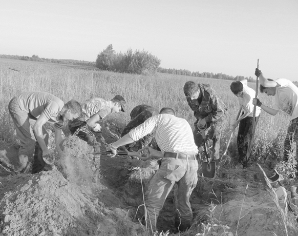
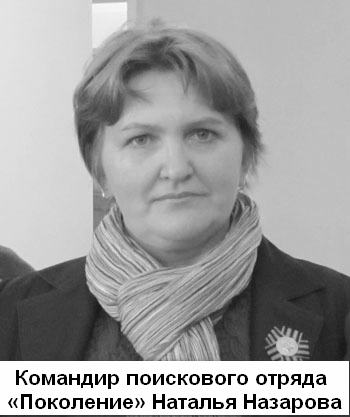
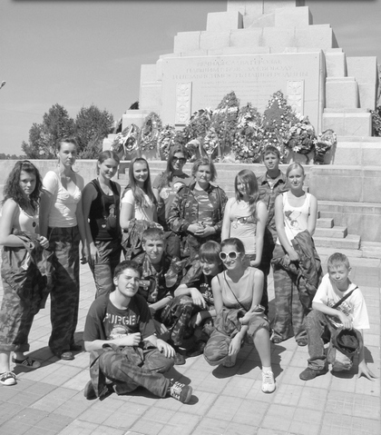

|
ПОКОЛЕНИЕ ВЫБИРАЕТ ПОИСК
(Окончание. Начало на странице 1.)
Летом вместе с отрядом «Русь» мы выезжали в палаточные лагеря с разведками. Тогда же была разработана программа гражданско-патриотического воспитания «Поколение выбирает поиск», которая включила в себя и «курс молодого бойца», и исследовательскую работу, и участие во всероссийской «Вахте Памяти».
Впервые в «Вахте Памяти» наш отряд участвовал в мае 2004 г., тогда мы прочувствовали, что такое «боевое крещение». Мозг отказывался принимать тот факт, что война не щадила никого - найденные останки принадлежали совсем молодым, юным ребятам. Вещи, которые находились при них, были предназначены для жизни, полные карманы патронов для продолжения боя, но страшные смертельные ранения от миномётного огня ставили точку в судьбе. Расчёски не причешут кудри, зеркальца не отразят молодые красивые глаза, неотправленные письма домой растворятся в грунтовых водах, духи не будут подарены любимой девушке...
Выросли мои первые бойцы отряда «Поколение», повзрослели. Девочки разъехались, создали свои семьи. Мальчишки прошли или проходят службу в армии. Самые младшие возмужали - стали опытными поисковиками. А я два года назад с семьёй уехала в Тверь, стала работать в 37-й школе. Здесь стали сбываться мои мечты об информационном центре с современной техникой, подключённой к Интернету.
Как только центр был обустроен и запущен, на его базе начал формироваться школьный пресс-центр. Я просто не могла не рассказать юным журналистам о своём отряде, о поисковой работе. Мальчики и девочки с интересом рассматривали фотографии с «Вахт Памяти», фильмы, задавали вопросы, а директор школы Татьяна Алексеевна Филонова и её заместитель Ольга Борисовна Форсова предложили мне набрать новый состав отряда «Поколение» уже на базе этой школы.
Для начала я решила отправить ребят пресс-центра на Ржевский мемориал для участия в торжественном захоронении найденных в ходе поисковых работ останков воинов РККА. Да простят меня мои дорогие Антон, Шагане, Настя, но у меня было предвзятое отношение к нынешним подросткам. Казалось, что они зациклены на себе любимых, своих амбициях. Забегая вперёд, хочу сказать, что теперь каждый раз, возвращаясь из разведок, «Вахты Памяти», перезахоронений, я повторяю: «У нас золотые дети, и души у них живые, готовые на отклик». А тогда мои журналисты привезли массу интересного материала: интервью с родственниками погибших, ветеранами ВОВ, поисковиками, фотографии, видео. Взахлёб, перебивая друг друга, делились впечатлениями. Таким образом, вопрос о новом составе отряда оказался риторическим: «Наши люди!».
С началом прошлого учебного года был дан старт формированию нового отряда «Поколение». Стало ясно, что программу гражданско-патриотического воспитания надо дорабатывать и расширять, так как появились новые информационные технологии. Они расширяют возможности поиска, помогают достойно представить результаты работ, пополнять базы данных установленных в ходе поиска имен погибших бойцов и командиров Красной Армии.
Весь учебный год готовились ребята из отряда к весенней «Вахте Памяти»: создавали сайт НИ ВПЦ «Подвиг», изучали материалы по методике поиска, проходили «курс молодого бойца». А по исследовательской работе Яны Зубаревой «На Ржевско-Вяземском плацдарме» знакомились с историей боевых действий на территории Зубцовского района, где должна была проходить Вахта. Совместно с ветеранами ВОВ посёлка Химинститута ребята подготовили альбом их воспоминаний о войне. Во время встреч с председателем Законодательного собрания Тверской области Андреем Епишиным учились ответственно подходить к проблемам поискового движения. Очень радует, что многие поддерживают это важное дело, и не только на словах. Так, например, депутат городской Думы Тимур Лютианович Кравец вручил отряду металлоискатель.
На первую Вахту в мае 2010 г. года поехали 10 человек. Погода, конечно, подкачала - было холодно, дождливо, сыро. Но, несмотря на все трудности, мои бойцы не испугались, они с интересом осваивали секреты военной археологии, которым их учили опытные инструкторы - командиры и бойцы поисковых отрядов. Им пришлась по душе романтика поисковых лагерей - общение у костра, где решаются самые важные вопросы поиска, происходит обсуждение результатов разведок, строятся планы на завтра, а когда стихают бурные обсуждения, начинаются разговоры по душам, песни под гитару, рассказываются поисковые легенды...
Своеобразие поисковой работы в том, что многие важные события происходят спонтанно, как озарение. Так случилось и 22 июня 2010 года в День Памяти и скорби, когда мы традиционно ездили в Город Воинской Славы Ржев на торжественное захоронение найденных в ходе поисковых работ останков воинов на Мемориале Воинской Славы.
Еще более пяти сотен бойцов вернулись с войны с воинскими и духовными почестями. Мой новый состав отряда впервые принимал участие в таком торжественном событии, хотя некоторые уже получили «боевое крещение» - участвовали в поднятии останков погибших.
Недаром говорится «это нужно не мертвым – это нужно живым». Ребята были впечатлены произошедшим и на обратном пути долго обсуждали увиденное и пережитое, вспоминали участие в «Вахте Памяти» на Зубцовской земле. А Серёжа Белов с укором посетовал: «Зачем так далеко ездить, когда у нас под Тверью работы много» и рассказал, что в деревне Старая Ведерня остались с войны воронки с бойцами, погибшими при освобождении Калинина. Узнал он об этом от мамы и бабушки. А мы по картам военных лет выяснили, что в этих местах воевала 5 стрелковая дивизия 31 Армии. Решено: по возвращении едем на разведку в деревню.
Сказано – сделано. Кстати пришёлся подарок депутата Тверской Городской Думы Тимура Лютиановича Кравца – металлоискатель. Первые две разведки оказались безрезультатными, т.к. больше шли наугад: во время мелиорации все воронки, неровности рельефа были запаханы, да и воспоминания местных жителей, видевших захоронения, за давностью лет почти стерлись. Помог дядя Сережи, показал приблизительное место одной из воронок. Еще, будучи ребенком, он видел как работники военкомата подняли останки 25 бойцов и увезли, остальных оставили, т.к. не хватило гробов. Трудно было визуально определить, есть ли здесь воронка вообще – ровное поле, местами покрытое зарослями малины и иван-чая. Меня привлекли небольшие кустики малины, пошла к ним и провалилась в небольшую ямку. Как оказалось, эта ямка была сделана Сережей, когда он играл в археолога. Прибор не подвел – пищал почти по всему периметру ямы. Решили сделать небольшой шурф. На глубине около метра оказались человеческие кости. Нашли! Но мы прекрасно понимали, что в такую жару втроем (я, Сережа, Ярослав Милошенко) яму не поднять, надо звать подмогу. Да и опыта у моих бойцов маловато, это их первая Вахта Памяти. Собрала своих ребят постарше и покрепче, а поисковиков отряда «Ополченец» и уговаривать не пришлось – они и в разведке здесь были, и переживали за результат, согласились сразу же.
6 июля рано-рано утром, пока не наступила жара, мы приехали в поле и тут же приступили к работе. Почти сразу стало понятно, что это не та яма, которую поднимал военкомат, т.к. бойцы лежали неглубоко на одном уровне, и почва не была потревожена. Подтвердился рассказ мамы Сережи – Татьяны, что местные жители сами стаскивали в воронки погибших, хоронили как могли…
Один, второй, … шестой, четырнадцатый. Бойцы лежат вповалку, и трудно определить, чья рука, чья нога. Личные вещи: ложки, зубные щетки, катушка от ниток, планшет – все разрушено временем. Планшет находился рядом с бойцом с металлическими зубами. Один медальон, второй, третий открытый (как оказалось позже, в одном самодельная записка, превратившаяся в серую массу, во втором вода смыла буквы, написанные химическим карандашом). Двадцать девятый… все. В кармашке планшета алюминиевый жетон с цифрами – до сих пор не удалось выяснить, что это. На ручке одной из ложек буквы «К Ф».
Медальон с растворившимися буквами прочитать так и не удалось. Мы уж было отчаялись, но пришла помощь со стороны заместителя ответственного секретаря Фонда «Жить и помнить» Александра Михайловича Терентьева, который предоставил нам копии документов Центрального архива Министерства обороны РФ – списки безвозвратных потерь 5 стрелковой дивизии с 1 декабря 1941 по 10 января 1942 года. По этим спискам в окрестностях Старой Ведерни полегло не менее 124 человек. Анализ этих списков и находок позволили предположить, что наши 29 человек – воины 142 стрелкового полка, погибшие в период с 5 по 16 декабря 1941 года. А совсем недавно в архивах военного комиссариата Калининского района Тверской области были обнаружены сведения о переносе захороненных в Старой Ведерне в братскую могилу деревни Смолино, жаль, что указано только количество.
Лето 2010 г. было насыщено работой: Ржевский мемориал - святой долг предания земле с отданием воинских и духовных почестей павшим воинам; Старицкий район - палаточный лагерь с отрядом «Русь», где были подняты 17 красноармейцев, собрана информация о других захоронениях в деревне Климово; Зубцовский район - участие в закрытии «Вахты Памяти», укладке останков 605 солдат и командиров в гробы и снова торжественное предание земле на Веригинском мемориале; и разведка, разведка, разведка... Зимой работы тоже хватает – учимся работать с архивными данными, анализировать, составлять паспорта воинских захоронений. Поиск продолжается…
Мы с ребятами очень надеемся, что кто-то из читателей может знать назначение жетона из планшетки. А может, откликнется кто-то из участников и свидетелей тех боёв в Старой Ведерне…
От редакции: в год Воинской славы Тверской земли и год 70-летия освобождения г. Калинина от немецко-фашистких оккупантов ребята из поискового отряда «Поколение» при поддержке Фонда «Жить и Помнить» реализуют две школьные программы: «Паспорт воинского захоронения» и «Боевым награждается орденом». О содержании этих программ, их целях и задачах мы расскажем в одном из следующих номеров нашей газеты.
|